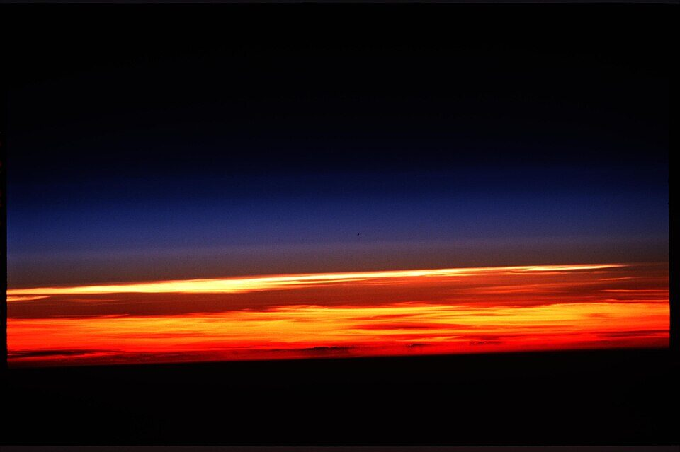

The atmosphere
What air is made of, its five layers, the ozone layer and why the sky is blue.

.jpg){kind=link}
The atmosphere is the layer of gases wrapped around the Earth, held in place by gravity. Although it stretches hundreds of kilometres, half of all the air lies below 5.5 km, and three quarters in the first 12 km. If the Earth were a football, the part of the atmosphere where weather happens would be thinner than a sheet of paper.
What air is made of
| Gas | Share |
|---|---|
| Nitrogen | 78% |
| Oxygen | 21% |
| Argon | 0.93% |
| Carbon dioxide | ≈ 0.042% (about 425 parts per million) |
| Water vapour | Variable, from almost 0 to 4% |
Carbon dioxide is a tiny share, but it plays a huge role: it is one of the gases that trap heat and keep the Earth mild. Without the natural greenhouse effect, the average temperature would be about −18 °C instead of 15 °C. Today's problem is that we are strengthening it.
The layers
| Layer | Height | What happens there |
|---|---|---|
| Troposphere | 0 to 8–17 km | Almost all the water vapour is here, and clouds and weather form. Temperature falls about 6.5 °C per kilometre |
| Stratosphere | Up to 50 km | Holds the ozone layer. Planes fly in its lower part, above the storms |
| Mesosphere | Up to 85 km | The coldest layer, down to −90 °C. Shooting stars burn up here |
| Thermosphere | Up to 600 km | Auroras form; the Space Station orbits |
| Exosphere | Up to about 10,000 km | The air thins out until it merges with space |
By convention, space begins at the Kármán line, 100 km up.
The ozone layer
Between 15 and 35 km up there is a region rich in ozone, a molecule of three oxygen atoms that absorbs most of the Sun's ultraviolet radiation, which is harmful to life. In 1985 British scientists discovered that every southern spring a hole opened over Antarctica, caused by CFCs from aerosols and refrigerators.
The response was a historic success: the 1987 Montreal Protocol, signed by every country in the world, banned those gases. The layer is recovering and is expected to return to its 1980 state around the middle of the century. Chemists Mario Molina, Sherwood Rowland and Paul Crutzen, who had warned of the danger, won the 1995 Nobel Prize.
Why is the sky blue?
Sunlight contains every colour. As it passes through the air, gas molecules scatter blue light, with its short wavelength, far more than red: this is Rayleigh scattering. So blue reaches us from every direction in the sky. At sunset, light crosses much more atmosphere, the blue is lost along the way and only oranges and reds get through. On Mars, with a very different atmosphere, sunsets are blue.
The weight of air
Although we do not feel it, air has weight: about 1 kg of it presses on every square centimetre of our body. In 1654 the mayor of Magdeburg, Otto von Guericke, joined two copper hemispheres and pumped the air out from inside: two teams of eight horses could not pull them apart.
Videos to understand it better
- Reveal Earth's Atmosphere | National GeographicNational Geographic · 610K views
- The Incredible Power Of Our Earth | BBC Earth Science | BBC StudiosBBC Studios · 575K views
Videos are from YouTube and belong to their creators. They only load when you click them. See all videos →